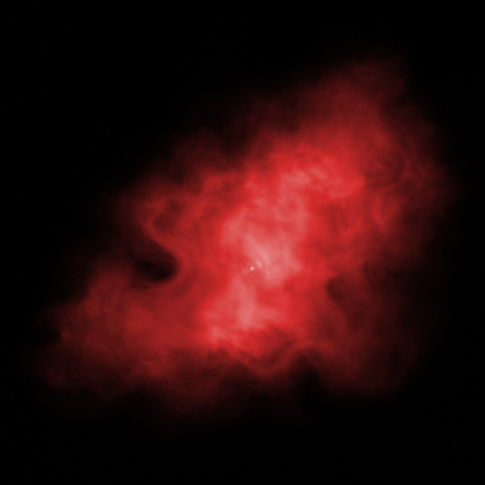
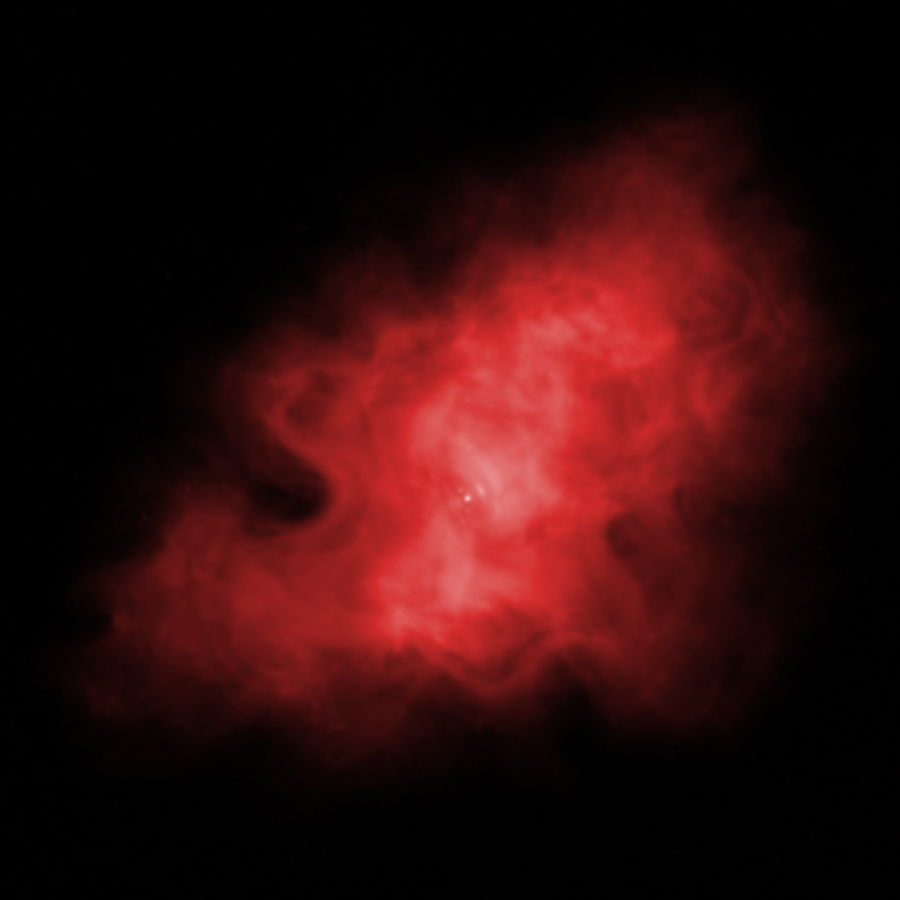
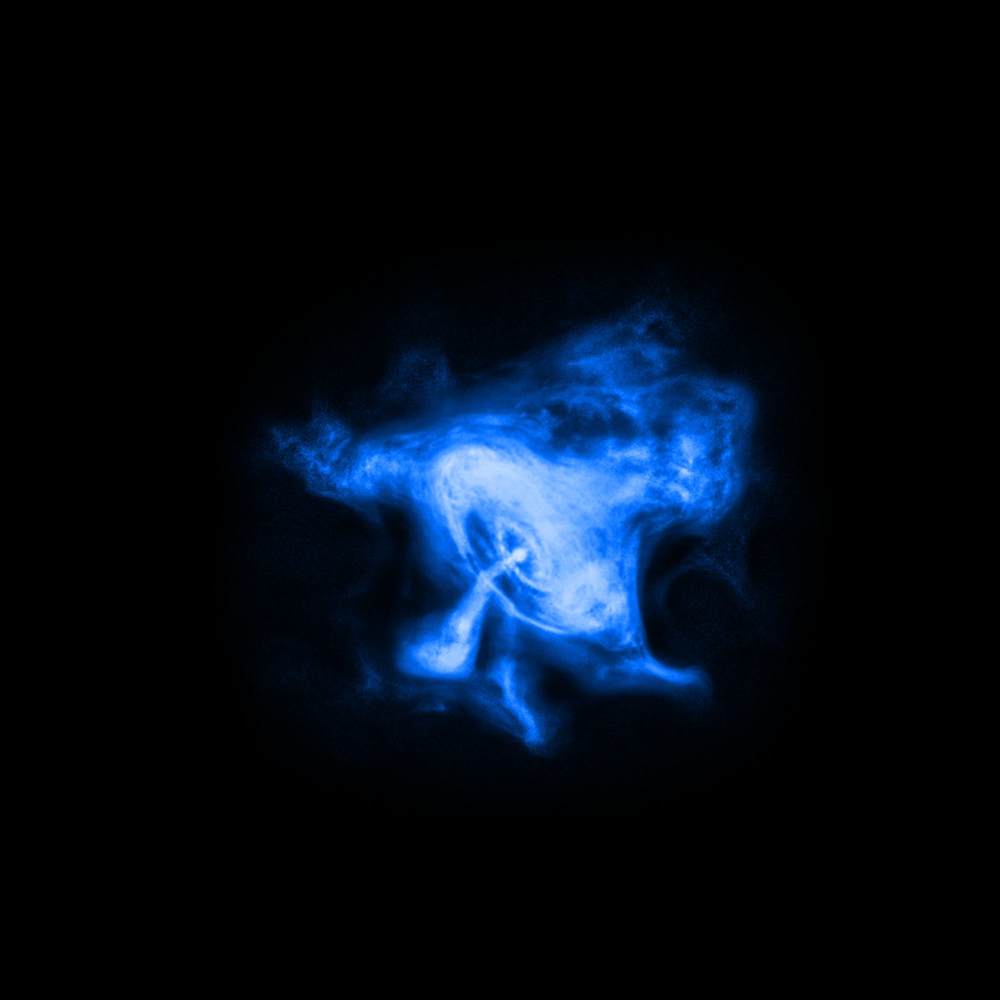
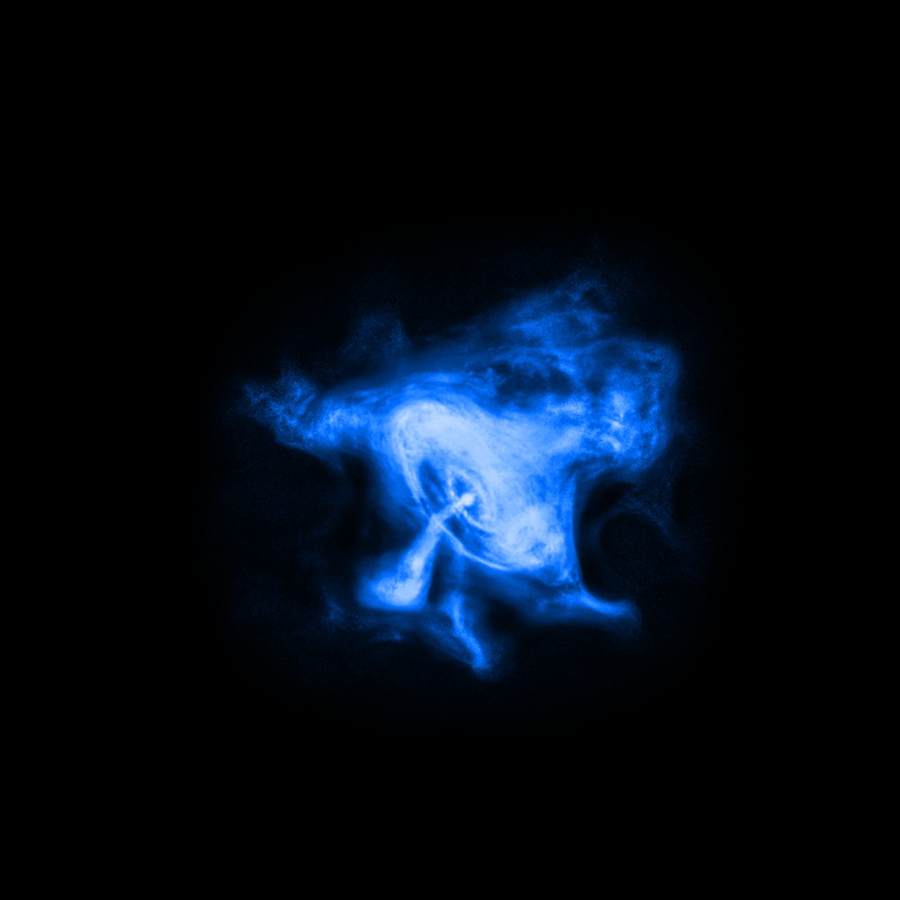

Космический телескоп "Хаббл"
Космический телескоп "Хаббл" (КТХ; англ. Hubble Space Telescope, HST; код обсерватории "250") — автоматическая обсерватория на орбите вокруг Земли, названная в честь Эдвина Хаббла. Телескоп "Хаббл" — совместный проект НАСА и Европейского космического агентства и входит в число Больших обсерваторий НАСА.
Размещение телескопа в космосе даёт возможность регистрировать электромагнитное излучение в диапазонах, в которых земная атмосфера непрозрачна; в первую очередь — в инфракрасном диапазоне. Благодаря отсутствию влияния атмосферы разрешающая способность телескопа в 7—10 раз больше, чем у аналогичного телескопа, расположенного на Земле.
Фото, сделанные телескопом "Хаббл"


 

 
